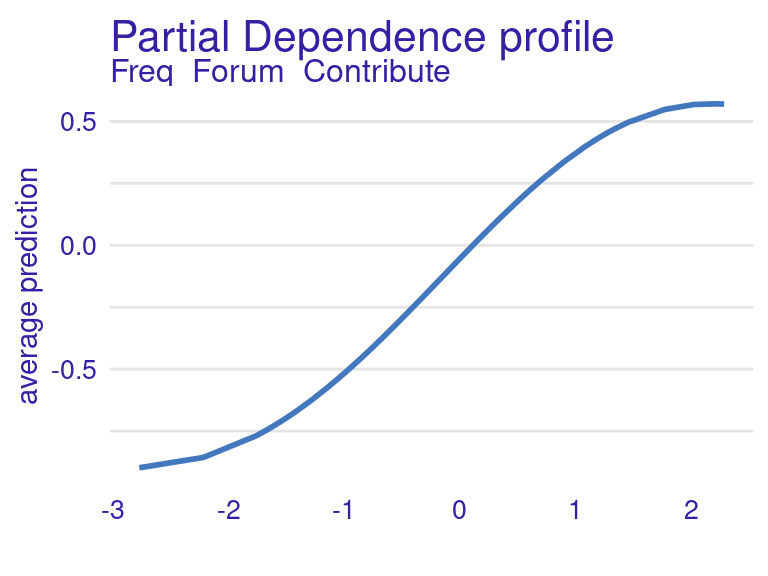
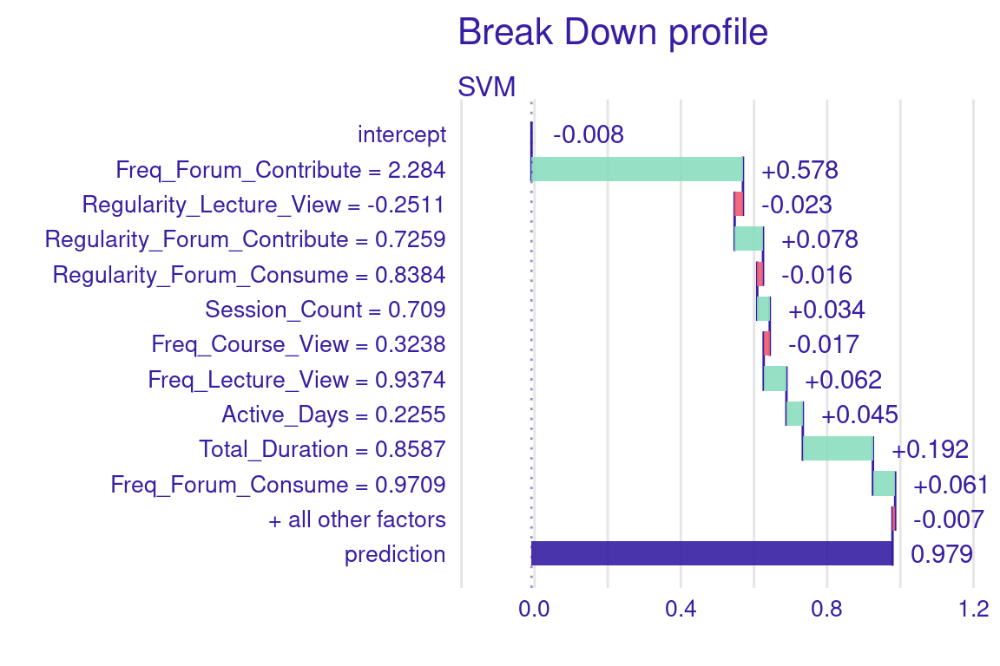

library(ellmer) # install.packages("ellmer")11 LLMs for Explainable Artificial Intelligence: Automating Natural Language Explanations of Predictive Analytics Models
Abstract
This chapter explores the integration of LLMs into the Explainable AI (XAI) pipeline within the field of Learning Analytics (LA). The focus of the chapter is on how to automate the transformation of XAI outputs into accessible, natural language explanations using LLMs. Namely, we demonstrate how LLMs can contextualize feature importance, partial dependence profiles, and local explanations, making predictive model outputs more interpretable and actionable for non-technical stakeholders. We illustrate this process making use of an open source language model through the LM studio software. However, the model used shares the API definition with some widely used commercial models, such as those implemented by OpenAI, making the portability almost immediate. This work contributes to advancing the intersection of generative AI, XAI, and learning analytics to promote transparency, inclusivity, and fairness.
1 Introduction
Large language models (LLMs) have recently become a transformative technology thanks to their ability to process natural language and generate close-to-human quality text [1]. Before LLMs, generating human-like text automatically was often a slow and manual process, requiring a lot of time and expertise. Since LLMs have been trained on vast amounts of data, they enable the automation of text generation, with little to no human intervention. Recently, the field of learning analytics has recognized the potential of generative artificial intelligence (AI) as a whole, and LLMs in particular, in various stages of the learning analytics cycle such as generating synthetic data, automated scoring and coding or feedback generation [2].
In this tutorial, we focus on the last phase of the learning analytics cycle: reporting the results of learning analytics applications and turning them into actionable insights [3]. Specifically, we will focus on making the results of predictive models understandable for teachers and students to aid decision making. LLMs have emerged as a powerful tool in this domain, particularly in enhancing the explainability of AI models, also known as Explainable AI (XAI). XAI refers to techniques and methods that enable humans to understand, trust, and make the right decisions based on the outputs generated by AI systems [4]. In learning analytics, XAI has the potential to become an extremely central tool because it allows teachers, students, parents and administrators to understand the rationale behind the predictions made by AI models.
Traditionally, explaining the results of complex predictive models required specialized knowledge in AI. However, LLMs have the potential to bridge this gap by generating natural language explanations that are both accurate and accessible to non-experts. For instance, when a predictive model identifies that a student is at risk of not completing a course, an LLM can be used to generate a human-readable explanation of why the model reached that conclusion. This explanation might include an overview of the key factors that influenced the prediction, such as the student’s engagement with course materials, performance on assessments, and participation in class discussions. The LLM can then articulate this information in a way that is tailored to the teacher’s or student’s specific context, providing clear guidance on potential interventions or areas for improvement rather than an endless list of numbers, tables and graphs.
The application of generative AI in general, and LLMs in particular, to learning analytics and education research and practice is still in its early stages [5]. One could say that the potential of LLMs to make learning analytics insights more accessible has been barely explored. Still, a few studies demonstrating LLMs’ ability to simplify very technical information and generate personalized, human-readable feedback for learners, teachers and other stakeholders can be mentioned here. One of the few existing examples is the study by Pinargote et al. [6], in which an LLM was used to transform insights shown in a learning analytics dashboard into textual explanations. While students appreciated the metrics and feedback for understanding group contributions, opinions varied on the fairness and necessity of detailed feedback. The study by Susnjak [7] proposed a framework that combines XAI with LLMs —similar to what we are doing in this tutorial— to offer prescriptive analytics to students at risk. A formal evaluation of the framework is still needed to validate it empirically.
In this tutorial, we will explore how to use LLMs to enhance the explainability of predictive models. Specifically, we will demonstrate how to generate natural language explanations of XAI results using LLMs. The reader will understand how to embed LLMs in the XAI pipeline to create personalized and contextualized explanations that make predictive model outputs understandable, helping teachers and students make informed decisions based on AI-generated insights.
2 Motivation and Relevant Work for using LLMs on XAI Output in Learning Analytics Research
Previous chapters of this book have introduced and discussed XAI in detail [4, 8, 9]. To summarise, XAI techniques, such as feature importance, help explain the outputs of black-box machine learning models. For example, in authorship detection [10], XAI algorithms identify and quantify key features in text that distinguish students’ writing profiles. Similarly, in predicting student outcomes [11], XAI highlights how different aspects of students’ online learning activities contribute to the model’s prediction of their results. For instance, an XAI result might show a feature importance rating of 0.8 for starting assessments early and 0.6 for forum participation when predicting a “distinction” grade. This indicates that starting assessments early has a greater influence on the prediction than forum participation. In such cases, XAI provides actionable feedback by not only identifying “who is at risk” but also implying “how to improve”.
However, despite their utility, XAI outputs can be challenging for students and educators to interpret due to two key reasons. First, XAI results are typically numerical or visual representations (e.g., feature importance graphs) that may not intuitively convey actionable insights. For example, understanding that a “0.8 feature importance” correlates with a behaviour requires familiarity with both the AI model’s purpose and the assumptions underlying its predictions. Expecting students and educators to possess such domain knowledge in XAI and data literacy is often unrealistic.
Second, even when XAI outputs are understood, human biases can influence interpretation and decision-making. For instance, over-reliance on XAI outputs may lead to uncritical trust in predictions, while under-reliance due to distrust or skepticism may result in the outputs being ignored [12, 13]. This highlights the need for additional support mechanisms to help interpret and act on XAI results effectively.
2.1 Addressing the Challenge with LLMs
LLMs, with their inherent ability to process and present information in natural language, can bridge the gap between XAI outputs and human understanding. Thanks to their ability to translating complex, technical insights into accessible, human-readable language, LLMs have the potential to enhance the interpretability and actionable value of XAI systems. For instance, instead of presenting raw feature importance values, an LLM can generate contextualised feedback such as: “The prediction is largely influenced by your consistent forum participation and early completion of assessments, which have shown a strong correlation with achieving higher grades in this course.”
This capability aligns with research exploring the use of LLMs in combination with XAI across diverse domains. For example, Khediri et al. [14] used XAI to identify critical network features that contributed to intrusion detection and employed LLMs to generate user-friendly explanations. These explanations improved decision-making by helping users understand the nature of detected anomalies. Mekrache et al. [15] applied XAI to anomaly detection in network operations and used LLMs to transform technical results into actionable insights for operators, enhancing both trust and operational efficiency. In the field of learning analytics, Swamy et al. [16] introduced the iLLuMinaTE framework, which combines XAI and LLMs to extract and interpret feature importance from students’ online behaviours. Tested on three MOOCs, this framework provided explanations that 89.52% of students found more actionable and trustworthy than traditional XAI tools. However, it struggled in contexts requiring deeper contextual understanding, highlighting an area for improvement.
Building on these efforts, Susnjak [7] developed a comprehensive framework that integrates predictive analytics (identifying at-risk students) with prescriptive analytics (recommending actionable interventions). This framework operates in three stages. First, ML models (e.g., Random Forest) predict student success and use XAI techniques like SHAP to identify key behavioural features influencing these predictions. Then, using counterfactual modeling, the framework generates “what-if” scenarios to determine the minimal changes needed for a positive outcome. In the last phase, LLMs translate predictive and counterfactual insights into personalised, actionable messages. For example, a message generated by Susnjak’s [7] framework might read: “You’re currently a full-time student studying towards a 200-credit degree with an average grade of 53%. To maximise your success, consider engaging more with online materials and quizzes.” In this framework, the integration of XAI and LLMs ensures that XAI identifies the “why” behind predictions. LLMs convey the “what next” in terms of practical guidance.
In addition to frameworks like Susnjak’s, researchers are exploring alternative applications of LLMs in learning analytics that bypass traditional XAI techniques. For instance, Pinargote et al. [6] investigated the potential of LLMs to directly process contextual information about students’ learning environments and behavioral data. After embedding these details into carefully designed prompts, LLMs were tasked with generating comprehensive summaries of learning analytics dashboards. These dashboards were not only data-rich but also included natural language narratives that translated raw data into actionable insights for educators and students.
Unlike traditional XAI approaches, which rely on detailed feature importance metrics to explain predictions, Pinargote’s approach makes use of LLMs to combine data interpretation with contextual knowledge. This approach highlights the capability of LLMs to humanize data insights, making them more accessible to non-technical users. Additionally, the incorporation of contextual cues (e.g., the type of course, common behaviours of top-performing students, or seasonal trends in engagement) allows LLMs tp generate recommendations that are relevant to specific learning environments. This customization enhances the relevance and usability of the feedback, addressing one of the primary challenges in learning analytics: translating technical results into actionable strategies for improvement.
While promising, these alternative approaches also raise critical questions about accuracy and generalisability. For instance, relying solely on LLMs to interpret behavioral data may introduce biases or hallucinations in the generated insights. Moreover, the extent to which these narratives align with actual student needs and institutional goals requires further investigation. Despite these challenges, the potential of LLMs to complement traditional XAI methods in specific contexts demonstrates their versatility in advancing learning analytics research.
As we explore these innovative uses of LLMs, it becomes clear that their integration into learning analytics frameworks is not merely a tool for explanation but a transformative step towards making learning analytics truly human-centered. LLMs’ ability to simplify complex data and align insights with users’ contexts opens new pathways for actionable, personalized, and impactful feedback in education.
3 Choosing an LLM and interacting with it via API
Many commercial LLMs offer both web-based and programmatic interfaces to interact with their models. These are undoubtedly an easy solution to access AI in its advanced form. However, there are two major drawbacks of relying on commercial LLMs. The first one is that commercial solutions often require a paid subscription which may not be a possibility for all researchers. The second and most important one is that relying on commercial products raises concerns about the privacy of students’ data, especially if they are used to train future models.
Open-source LLMs are a viable alternative that can be deployed locally in a way that students’ personal or sensitive data is kept to the organization. Furthermore, open-source LLMs are becoming increasingly capable. Although open-source alternatives often require more technical knowledge than commercial ones to be deployed and secured, there is an increasing number of off-the-shelf solutions that address this difficulty and make installing and using local LLMs far much easier. For instance, an application that is becoming increasingly popular is LM Studio, a desktop platform that allows users to run almost any LLM available in Hugging Face1 that has been converted to gguf, including Llama 3, Phi 3, Falcon, Mistral, StarCoder and Gemma. LM Studio deploys a local server that can be interfaced through a programmable application interface (API), more specifically a REST API, and therefore be used from any program (e.g., an R script). Moreover, many existing applications use OpenAI API standards which makes them compatible with most existing libraries that implement OpenAI clients.
For our tutorial, we are going to use LM Studio as our backend. To install it, follow the instructions on their website2 for your operating system and run the app (Figure 11.1).

The next step would be to download one of the existing models. For the sake of this tutorial we are going to use a Gemma model (lmstudio-ai/gemma-2b-it-GGUF)3. Gemma has been developed based on the principles of Gemini (Google’s frontier model) and publicly and freely available at Hugging Face. This LLM is quite small (1.50GB on disk) but still achieves good performance. Feel free to choose a different model, depending on your device’s capabilities and the availability of more recent releases at the time you are reading this chapter. Search for the chosen model in the LM Studio app and download it by clicking on the “Download” button next to its name (Figure 11.2).

Once you have downloaded the model, you need to initialize the server4. First, click on the Local Server tab (the <-> icon on the left sidebar). On the top bar, select the LLM you have downloaded from the dropdown list and then start the server by clicking on the “Start Server” button. By default, your server will run on the port 1234 and will have the default API key “lm-studio”, but you can change this configuration if you so wish. Once the server has started, it will be ready to receive and reply to API requests (Figure 11.3).

To interact with the API from an R script, we will use the ellmer R package [17]. This R package offers a wrapper function for interacting with many well-known LLM platforms. The package enables users to send prompts, retrieve the generated responses, and customize API interactions directly within R. It is created and maintained by the tidyverse [18] community, which is one of the most active in R. Below we import the library:
The next step after installing the library is creating a client to interact with the LLM API. The ellmer package offers a variety of clients including Anthropic’s Claude, AWS Bedrock, Azure OpenAI, Databricks, GitHub model marketplace, Google Gemini, Groq, Ollama, OpenAI, perplexity.ai, Snowflake Cortex, and VLLM. In our case, we are going to choose the OpenAI client which is compatible with our “lmstudio-ai/gemma-2b-it-GGUF” model in LM studio.
The client will include the connection information to access LM studio. Change the code accordingly if you have configured a different port and API key in LM Studio. If instead of using LM studio you prefer to use OpenAI, simply omit the base_url argument and provide the right OpenAI API key in the api_key argument. If you are using another LLM backend, check the ellmer documentation to choose the right client instead of chat_openai. Specify the model name according to the model you have downloaded in LM studio (“lmstudio-ai/gemma-2b-it-GGUF” in our case), or the model of your choice within OpenAI (e.g., gpt-3.5-turbo) if you chose that option. We can also specify a system prompt (system_prompt) if we so wish [19].
client <- chat_openai(
base_url = "http://localhost:1234/v1",
model = "lmstudio-ai/gemma-2b-it-GGUF",
api_key = 'lm-studio',
system_prompt = "You are an assistant that is expert in explainable AI for
providing learning analytics recommendations.",
)You can check whether you are able to connect to your local LM studio by sending a simple prompt. We will use the client that we have just created and enter the content of our prompt as an argument to the chat function. For example:
client$chat("Who are you?")I am a language model designed to assist with learning analytics and explainable
AI (XAI) tasks. I have been trained on a massive dataset of text and code and
am able to provide insights and recommendations related to XAI.
**Here are some of the specific ways I can assist you with learning analytics
and XAI:**
* **Identifying patterns and relationships in data:** I can analyze data to
identify patterns, trends, and outliers that could be indicative of important
insights or anomalies.
* **Ranking and filtering data points:** I can rank data points based on their
relevance to a specific query or hypothesis,allowing you to focus on the most
important information.
* **Visualizing data and insights:** I can generate visualizations, charts, and
other representations of data and insights to help you understand them more
easily.
* **Providing explanations for AI models:** I can explain the decisions made by
AI models, including the data they consider, the algorithms used, and the
weightings assigned to different features.
* **Recommending learning algorithms and techniques:** Based on the data and
insights I identify, I can recommend appropriate
learning algorithms and techniques for further analysis.
**I am here to assist you in any way that I can, so please do not hesitate to
ask me any questions you may have.**If you get an error, there could be several causes: that your server is not running, that you are running it on a different port than the default (1234), or that you provided the wrong model name, among other possibilities. If everything is in order, you will see the output of the prompt as shown above.
Now that we have our infrastructure working, we can learn how to use it to enhance our learning analytics pipeline. In the next section, we present a case study about explaining and providing recommendations based on the results of an XAI predictive model. We will use the Gemma LLM through the LM studio API using the ellmer package just like we have learned in the previous steps.
4 A case study about predictive modeling
4.1 Introduction
In previous chapters of this book, we learned about XAI [4, 8, 20] and how to implement a pipeline for predicting students’ performance based on their online engagement [21, 22], which has been an established goal of learning analytics and AI in education [5]. The overall workflow is depicted in Figure 11.4. It is common to start with an exploratory data analysis (EDA) (A), as depicted in [21] followed by data preparation (B). Then we split the data into a training set and a testing set (C) and we use the training set to train an ML model (D) and evaluate its performance (E). We then use XAI techniques (F) to understand the model in general (i.e., global explainability, [20]) or specific predictions (i.e., local explainability, [8]). In this chapter, we go one step further and use LLMs (G) to explain the XAI outcomes using natural language, honoring one of the main uses of LLMs, which is to provide automated personalized feedback [1]. Please, consult the previous chapters to learn more about XAI and LLMs.

4.2 Model fitting
First, we are going to load all the necessary libraries, in addition to ellmer [17], which we have already described in the previous section:
rio:riostands for “R Input/Output” and is a package used for importing and exporting data files [23]. It supports a wide variety of file formats like CSV, Excel, JSON, and more. We will use it to load our dataset from an external file.tidyverse:tidyverseis a collection of R packages designed for data science [18]. It includes packages likedplyrfor data manipulation,tidyrfor tidying data, and several others. In the tutorial, we will use it to manipulate and explore our data by filtering, selecting, or transforming data.rsample: Thersamplepackage provides functions to create resampling objects that can be used to evaluate and tune models [24]. It includes methods like bootstrapping, cross-validation, and splitting data into training and test sets. In this tutorial, it is used to split the dataset into training and testing sets. This is a crucial step in building and evaluating machine learning models.e1071: Thee1071package includes functions for various machine learning algorithms [25], especially support vector machines (SVMs), which is the family of models that we are using in this tutorial.DALEX: The packageDALEX(Descriptive mAchine Learning EXplanations) is used for model interpretation [26]. It provides tools to explain and visualize how machine learning models make predictions, making them more transparent and understandable. In the tutorial,DALEXis the engine that performs XAI.
set.seed(50)
# Load necessary libraries
library(rio)
library(tidyverse)
library(rsample)
library(e1071)
library(DALEX)The next step is importing our data, which is available on a Github repository along with most of the datasets used in the book, and assign it to the student_data variable. The dataset we are using is a synthetic dataset based on the study by Jovanović et al [27] and consists mostly of behavioral engagement indicators that can be obtained from the logs captured by the learning management system (LMS). Refer to Chapter 3 for a more detailed descritpion and EDA.
# Import the data
student_data <-
import("https://raw.githubusercontent.com/lamethods/data2/main/lms/lms.csv")Then, we follow the typical machine learning pipeline (Figure 11.4). The EDA of this dataset is presented in Chapter 3 so we omit it here for brevity. We prepare the data by standardizing all numeric columns in (i.e., transforming them to have a mean of 0 and a standard deviation of 1) (Figure 11.4–B). This is important for many machine learning models that are sensitive to the scale of features. Then, we split our data into training (80%) and testing (20%) using the rsample package functions (Figure 11.4–C). The training set will be used to fit the model (Figure 11.4–D), while the test set is used to evaluate its performance (Figure 11.4–E). Please, bear in mind that in a real setting more data cleaning and pre-processing operations are likely to be needed before being able to utilize the data.
# Standardize the numeric columns
student_data_standardized <- student_data |>
mutate(across(where(is.numeric), ~scale(.) |> as.vector()))
# Split the data into training and testing sets
data_split <- initial_split(student_data_standardized, prop = 0.8)
train_data <- training(data_split)
test_data <- testing(data_split)We then specify the formula of our model. The formula defines the relationship between the target variable (Final_Grade) and the predictor variables (engagement indicators like course views, forum contributions, etc.). We use the formula and the training data to fit an SVM model (Figure 11.4–D).
# Define the formula to specify the relationship between the target variable
# and the predictor variables
formula <- Final_Grade ~ Freq_Course_View + Freq_Lecture_View +
Freq_Forum_Consume + Freq_Forum_Contribute + Regularity_Course_View +
Regularity_Lecture_View + Regularity_Forum_Consume +
Regularity_Forum_Contribute + Session_Count + Total_Duration + Active_Days
# Fit the SVM model
svm_fit <- svm(formula, data = train_data, kernel = "radial")4.3 Model performance
Now that we have created and fitted our ML model, we can evaluate how well the model performed (Figure 11.4–E) and use XAI to understand how it made decisions. The explain() function from DALEX creates an explainer object for the SVM model. This explainer is used to assess and visualize the model’s performance.
set.seed(50)
# Create an explainer with DALEX
explainer_svm <- explain(
svm_fit,
data = dplyr::select(test_data, -Final_Grade),
y = test_data$Final_Grade,
label = "SVM",
verbose = FALSE
)For instance, the model_performance function calculates various performance metrics for the model using the test data. It return a performance object (mp_svm) that contains statistics and diagnostic information about the model’s predictive accuracy. Some of the common metrics provided are:
- RMSE (Root Mean Square Error): Measures the average error between the predicted values and the actual values. Lower RMSE values indicate better model performance.
- MAE (Mean Absolute Error): Another measure of the average magnitude of prediction errors, which is less sensitive to outliers compared to RMSE.
- R-squared: The proportion of the variance in the dependent variable that is predictable from the independent variables.
- Residuals: The difference between the observed target values and the predicted values for each test observation.
mp_svm <- model_performance(explainer_svm)
mp_svmMeasures for: regression
mse : 0.5556946
rmse : 0.7454493
r2 : 0.4063128
mad : 0.4442718
Residuals:
0% 10% 20% 30% 40% 50%
-1.64093297 -0.58085583 -0.41026001 -0.07698939 0.07855870 0.28133263
60% 70% 80% 90% 100%
0.34303022 0.51622444 0.76114088 1.06787159 1.81745294 Measures for: regression
mse : 0.56
rmse : 0.75
r2 : 0.41
mad : 0.44
Residuals:
0% 10% 20% 30% 40% 50% 60% 70% 80% 90% 100%
-1.64 -0.58 -0.41 -0.08 0.08 0.28 0.34 0.52 0.76 1.07 1.82 Let us now see how an LLM can be used to explain the performance results to a practitioner (Figure 11.4–G). For that purpose, we use the client$chat function and we create an appropriate prompt. According to the DAIR.AI’s Prompt Engineering Guide [28], the main elements of a prompt are: instruction, input data, output format, and context information. We follow these guidelines and the work by Zytek et al. [29] to draft the instruction, context, and desired output format of our prompt, and we add the input data from the model performance object. To make sure we pass the text version of the results rather than the R object itself, we use the capture.output function to capture the output of calling the command print on the object and we assign it to a variable named mp_svm_output. The output is collected as a vector of lines of text, so we need to combine all the lines together into a single textual variable using paste(mp_svm_output, collapse = "\n"). We then combine the prompt with the results using the same technique. Lastly, we use the client$chat function to send the prompt to the LLM.
# Capture print output of the model performance
mp_svm_output <- capture.output(mp_svm)
# Put it together into a single string of text
mp_svm_print <- paste(mp_svm_output, collapse = "\n")
# Combine generic prompt with our model performance
mv_svm_prompt <- paste("You are helping teachers understand an ML model’s
prediction. The model predicts students' performance based on engagement measures.
I will give you the model performance evaluation. Come up with a textual
non-technical explanation of how well the model performs that I could include in
a dashboard. Take into account that the data has been standardized:",
mp_svm_print, collapse = "\n")
# Send the prompt to the LLM and print the results
client$chat(mv_svm_prompt)The model successfully predicts students' performance based on engagement
measures, achieving a mean squared error (MSE) of 0.4504274, a root mean
square error (RMSE) of 0.6711389, and an r² value of 0.4785088. These indicate
that the model is performing well in predicting performance based on engagement
measures.
The model also achieves a median Absolute Deviation (MAD) of 0.4217903, which
suggests that the model can effectively capture the typical difference between
individual student scores on the engagement measures. The model also has a high
percentage of residuals within the range of -0.1 to 0.1, indicating that the
model is able to make accurate predictions while considering the effect of
engagement measures on student performance.4.4 Feature importance
The LLM has offered an explanation for the overall performance results, but still we would need to know what are the variables that are influencing the model’s decisions. A common explainable XAI technique that we can use for this purpose is feature importance (Figure 11.4–F). We can use this technique (implemented in the feature_importance function of DALEX) to calculate how much each feature contributes to the prediction. Features with high importance have a bigger influence on the final grade predictions. From the results we can see that the number of contributions to the forum is the most predictive feature, followed by the regularity thereof (Figure 11.5). Next were the session count, the total time spent online and the regularity of visiting the course main page.
vi_svm <- feature_importance(explainer_svm)
vi_plot <- plot(vi_svm)
vi_plot 
We can ask the LLM to come up with an explanation of these results (Figure 11.4–G). First, we extract the statistics from the feature importance. The results of the feature imporatance function returns the raw data after each permutation. If we want to get the final results, the easiest way is to obtain them from the plot (vi_plot$data). We order the results from most important to least important, and we display them as pairs (Variable, loss), as suggested by [29].
vi_svm_text <- vi_plot$data |> # Extract data from the plot
arrange(desc(median)) |> # Order by median value
mutate(Features = # Create pairs (feature, median feature value)
paste0("(",variable,", ", round(median, 2), ")")) |>
pull(Features) |> # Extract the column that contains the pairs
paste(collapse = "\n") # Create a single text variable that contains all pairs
cat(vi_svm_text) # Print output(Freq_Forum_Contribute, 0.91)
(Regularity_Forum_Contribute, 0.8)
(Session_Count, 0.79)
(Regularity_Course_View, 0.78)
(Active_Days, 0.78)
(Total_Duration, 0.77)
(Freq_Course_View, 0.77)
(Regularity_Lecture_View, 0.76)
(Freq_Lecture_View, 0.75)
(Freq_Forum_Consume, 0.75)
(Regularity_Forum_Consume, 0.75)We now follow the same prompt guidelines as before [28, 29] to construct our prompt. We combine it with the feature importance output using paste and we send it to the LLM with client$chat.
client$chat(paste("I will give you the results of permutation based
feature importance of a model computed with DALEX in the form
(feature, median_dropout_loss). Please provide a clear, concise and understandable
narrative for teachers that explains how these contributions influence students'
predicted grades. Ensure the explanation highlights the significance of each
feature's contribution to the overall prediction in order",
vi_svm_text, collapse = "\n"))The results of the permutation-based feature importance computed with DALEX
provide a clear view of how various factors influence students' predicted
grades. Here’s a concise explanation of each feature's contribution to the
model’s predictions:
*Frequent Forum Contributions* (0.91): The most important factor. Active
participation in forums signals higher engagement with the material and
likely leads to better understanding and academic performance.
*Session Count* (0.73): The number of sessions reflects how often students
interact with the platform. More sessions indicate consistent effort, which
improves learning outcomes.
*Regular Forum Contributions* (0.71): Consistent engagement in forums over
time is crucial. Regular interaction helps students stay engaged,
enhancing their grasp of the subject.
*Regular Course Views* (0.71): Regularly viewing course materials helps
students keep up with the content, reinforcing their knowledge and boosting
their grades.
*Total Engagement Duration* (0.71): The total time spent engaging with
coursecontent reflects dedication. More time on task generally correlates
with better academic outcomes.
*Regular Forum Consumption* (0.7): Regularly reading forum posts without
contributing also has a significant impact. This allows students to learn
from others’ insights and discussions.
*Active Days* (0.7): The number of days a student actively participates in
the course is another key indicator of consistent engagement, which is
closely tied to higher performance.
*Frequent Forum Consumption* (0.69): Reading forums frequently helps
students stay informed about discussions, reinforcing their learning.
*Regular Lecture Views* (0.69): Watching lectures on a regular basis is
important for knowledge retention and consistent progress through the course.
*Frequent Course Views* (0.68): Students who frequently revisit course
materials are more likely to master the content, contributing to better
academic results.
*Frequent Lecture Views* (0.66): Watching lectures often helps students
review and understand complex concepts, leading to improved performance.
In conclusion, the most influential factors driving student performance are
active and regular engagement, particularly through forums and course
interactions. These behaviors reflect deeper learning and a steady approach to
studying, leading to higher predicted grades.The LLM correctly identifies the important features and how important they are in the final decision. However, the LLM seems to be making some inferences about whether the variables positively or negatively predict the final grade, which is not something that we can obtain from the feature importance solely. It also makes some strange interpretations, like reading posts without contributing has a significant impact inference, which is not very plausible.
4.5 Partial Dependence Profile
The Partial Dependence Profile (PDP) is another XAI technique, which used to explain the relationship between a specific feature and the predicted outcome of a machine learning model. It helps visualize and understand how changes in a feature affect the model’s predictions, while keeping all other features constant. Contrary to feature importance which calculates to which extent a feature affects the prediction accuracy, the PDP helps us understand how increasing or decreasing the value of a certain feature affects the final outcome. For example, if a student increases the number of forum contributions, will they be predicted as having a higher or lower final grade? To obtain this information we use the model_profile function from DALEX and plot the results (Figure 11.6).
pdp_svm_fcontrib <- model_profile(explainer_svm, variables = "Freq_Forum_Contribute")
plot(pdp_svm_fcontrib) + theme(plot.subtitle = element_blank())
Freq_Forum_ContributeAccording to the PDP, an increase in forum contributions is expected to result in a higher grade prediction. Let’s see if the LLM can obtain a similar interpretation. Since the number of data points used to create the previous graph is too high to pass to the LLM, we can provide only a few values of the curve (i.e., a few x-y pairs) and try to recreate the same profile. For example, we can only estimate the profile for all integer values of x (from -3 to 3). The plot generated is very similar to the previous one (Figure 11.7):
pdp_svm_fcontrib3 <- model_profile(explainer_svm, variables = "Freq_Forum_Contribute",
variable_splits = list(Freq_Forum_Contribute = -3:3))
plot(pdp_svm_fcontrib3) + theme(plot.subtitle = element_blank())
Freq_Forum_Contribute with limited x-axis valuesWe can now extract the x-y pairs from the results as follows:
pdp_svm_fcontrib3xy <- pdp_svm_fcontrib3$agr_profiles |> # Extract the data
mutate(Pair = # Create (x,y) pairs
paste0("(x = ", `_x_`, ", y = ", round(`_yhat_`, 2), ")")) |>
pull(Pair) |> # Extract the x,y pairs
paste(collapse = "\n") # Join the pairs together in a single text variable
cat(pdp_svm_fcontrib3xy) # Print the (x,y) pairs(x = -3, y = -0.9)
(x = -2, y = -0.82)
(x = -1, y = -0.52)
(x = 0, y = -0.05)
(x = 1, y = 0.37)
(x = 2, y = 0.57)
(x = 3, y = 0.48)We create the prompt following the guidelines by [29] and send it to the LLM to obtain the explanation in natural language using client$chat:
client$chat(paste("I will give you the PDP x-y pairs of
the feature Freq_Forum_Contribute. Please provide a concise one-sentence
explanation for teachers about how this feature influences students' predicted
grades Ensure the explanation highlights how changes in the feature affect the
grade prediction.", pdp_svm_fcontrib3xy, collapse ="\n"))As students increase their forum contributions, their predicted grades improve
significantly, peaking with moderate to high contributions, though excessive
participation shows slightly diminishing returns.It seems that the LLM can accurately capture the direction of the effect of this feature. We can also automate this process for all the features iterating through all the features and storing the response of the LLMs in a list. To avoid printing the LLM response every time, we can add the argument echo = FALSE to the client$chat function call.
# Get the feature names from the model
features <- names(explainer_svm$data)
# Initialize an empty list to store the results
all_pdp_results <- list()
# Loop through each feature in the model
for (feature in features) {
# Create PDP for the current feature
variable_splits <- list()
variable_splits[[feature]] <- -3:3
pdp_svm <- model_profile(explainer_svm, variables = feature,
variable_splits = variable_splits)
# Extract x-y pairs from the PDP
pdp_svm_xy <- pdp_svm$agr_profiles |>
mutate(Pair = paste0("(x = ", `_x_`, ", y = ", round(`_yhat_`, 2), ")")) |>
pull(Pair) |>
paste(collapse = "\n")
prompt <- paste("I will give you the PDP x-y pairs of the feature",
feature, ".", "Please provide a concise, non-technical one-sentence explanation
for teachers about how this feature influences students' predicted grades. ",
"Ensure the explanation highlights how changes in the feature affect the grade
prediction.", pdp_svm_xy, collapse = "\n")
# Generate the response for the current feature
pdp_svm_res <- client$chat(prompt, echo = FALSE)
# Store the result in the list
all_pdp_results[[feature]] <- pdp_svm_res
# Print result
cat("\n\n", feature, "\n", sep = "")
cat(all_pdp_results[[feature]])
}Freq_Course_View
As students increase their course views from very low to moderate, their
predicted grades improve slightly, but viewing too much beyond that point can
result in lower predicted grades.
Freq_Forum_Consume
As students increase their frequency of consuming forum content from very low
to moderate levels, their predicted grades improve slightly, but consuming too
much forum content beyond that point may result in lower predicted grades.
Freq_Forum_Contribute
As students increase their forum contributions, their predicted grades rise
significantly, peaking at moderate levels, but very high contributions show a
slight decline in impact.
Freq_Lecture_View
Watching lectures more frequently improves predicted grades up to a point,
but excessive viewing results in a slight decrease in the benefit.
Regularity_Course_View
Consistently viewing course content improves predicted grades, with the benefit
leveling off at higher regularity.
Regularity_Lecture_View
Regular lecture viewing has a small positive impact on predicted grades,
especially as students maintain a steady viewing habit.
Regularity_Forum_Consume
Regularly reading forum content gradually improves predicted grades, showing a
steady increase with more consistent engagement.
Regularity_Forum_Contribute
Regular forum contributions improve predicted grades, but excessive regularity
can slightly lower the benefit.
Session_Count
More sessions improve predicted grades steadily, with the largest gains seen at
moderate session counts.
Total_Duration
The longer students engage with the course, the better their predicted grades,
though the impact flattens with very high durationsWe can check if the generated explanations are correct by looking at the PDP plots of all the features (Figure 11.8):
pdp_svm <- model_profile(explainer_svm)
plot(pdp_svm) + theme(plot.subtitle = element_blank(), text = element_text(size = 6))
4.6 Local explanations
The previous XAI techniques are useful to understand the model’s performance and overall decision-making process. However, they do not help us understand how specific decisions have been made for specific students. For that, we need local explanations. We can explain a specific student’s prediction (e.g., number 2) using the predict_parts function from DALEX. In Figure 11.9, we see that this student has been predicted to have a grade of 0.979 (almost one SD above the mean), and therefore they are a very high achieving student. We see how the most contributing factor has been the frequency of contribution to the forum, followed by the duration of their online time.
# Row 2 is student 2.
# We remove column 12 since it contains the grade that we want to predict
student2 <- test_data[2, -12]
explanation2 <- predict_parts(explainer_svm, new_observation = student2)
plot(explanation2)
We can try to see if the LLM can come up with a similar description. Let us extract the variable values and contributions from the results in the format (Feature name, Feature value, Feature contribution).
local2 <- explanation2 |> data.frame() |> head(-1) |> # Extract explanation data
mutate(Tuple = # Create tuples (Feature name, Feature value, Feature contribution)
paste0("(",variable_name,", ",
round(as.numeric(variable_value), 2), ", ",
round(contribution, 2), ")")) |>
pull(Tuple) |> # Extract tuples
paste(collapse = "\n") # Join tuples together in a single numeric variable
cat(local2)(intercept, 1, -0.01)
(Freq_Forum_Contribute, 2.28, 0.58)
(Regularity_Lecture_View, -0.25, -0.02)
(Regularity_Forum_Contribute, 0.73, 0.08)
(Regularity_Forum_Consume, 0.84, -0.02)
(Session_Count, 0.71, 0.03)
(Freq_Course_View, 0.32, -0.02)
(Freq_Lecture_View, 0.94, 0.06)
(Regularity_Course_View, 0.09, -0.01)
(Active_Days, 0.23, 0.04)
(Total_Duration, 0.86, 0.19)
(Freq_Forum_Consume, 0.97, 0.06)Now let us create the prompt following the guidelines by [29], and send it to the LLM to obtain the explanations using send_prompt.
local_prompt <- paste("I will give a SHAP feature contribution explanation in the
format (feature_name, feature_value, contribution). Please provide a concise,
clear and understandable narrative for a teacher that explains how these
contributions influence students' predicted grades (standardized). Ensure the
explanation highlights the significance of each feature's contribution to the
overall prediction.\n", local2, collapse = "\n")
client$chat(local_prompt)Based on the SHAP feature contributions, here's a clear and concise explanation for
teachers about how each feature influences the predicted grade (standardized):
Intercept (1, -0.01): The baseline predicted grade is slightly adjusted downward by the
intercept, but the overall impact is minimal.
Freq_Forum_Contribute (2.28, 0.58): This is the most significant positive contributor to
the predicted grade. Frequent forum contributions strongly boost the predicted grade,
highlighting the importance of active student engagement in discussions.
Regularity_Lecture_View (-0.25, -0.02): Inconsistent lecture viewing has a small negative
impact on the predicted grade, suggesting that irregular engagement can slightly lower
student performance.
Regularity_Forum_Contribute (0.73, 0.08): Regular contributions to forum discussions
positively influence the predicted grade, though not as strongly as frequency,
reinforcing the value of steady participation.
Regularity_Forum_Consume (0.84, -0.02): Regularly reading forums without contributing
has a slight negative effect, implying that passive consumption of forum content alone
may not benefit grades as much as active participation.
Session_Count (0.71, 0.03): Engaging in more sessions slightly raises the predicted
grade, reflecting the importance of consistent interaction with the course platform.
Freq_Course_View (0.32, -0.02): Viewing course materials frequently has a small negative
contribution, suggesting that excessive course views may not significantly boost
performance.
Freq_Lecture_View (0.94, 0.06): Frequent lecture viewing positively influences the
predicted grade, showing that regularly revisiting lectures helps students perform better.
Regularity_Course_View (0.09, -0.01): Regular course viewing has a minor negative
contribution, indicating that irregular viewing habits may slightly hinder grade outcomes.
Active_Days (0.23, 0.04): Engaging on more active days has a modest positive effect on
the predicted grade, emphasizing the value of consistency in student engagement.
Total_Duration (0.86, 0.19): Spending more time engaging with the course content
significantly boosts the predicted grade, reflecting the importance of overall study time.
Freq_Forum_Consume (0.97, 0.06): Frequently reading forum discussions without
contributing provides a small positive contribution, showing that staying informed
through forum activity still benefits performance, though less than active participation.
Summary:
Active participation in forums and time spent engaging with course content are the
strongest drivers of predicted grades, while passive or inconsistent behaviors tend to
have smaller or negative impacts. This highlights the importance of both frequency and
regularity of engagement across different types of activities.We can try different versions of our prompt until we obtain satisfactory results. Now, following our initial goal, we need to automate the automated feedback generation for all students. We can create a function to get the explanation for any student as follows.
local_explanation <- function(student) {
# Select a student to explain
instance <- test_data[student, -12]
# Get local explanations
predict_parts(explainer_svm, new_observation = instance)
}We do the same to generate the prompt based on each individual students’ results:
explanation_to_text <- function(student = 1) {
current <- local_explanation(student)
current_numbers <- current |> data.frame() |> head(-1) |>
mutate(Tuple = paste0("(",variable_name,", ",
round(as.numeric(variable_value), 2), ", ",
round(contribution, 2), ")")) |>
pull(Tuple) |> paste(collapse = "\n")
prompt <- paste("I will give a SHAP feature contribution explanation in the
format (feature_name, feature_value, contribution). Please provide a concise,
clear and understandable narrative for a teacher that explains how these
contributions influence the predicted price of the grade (standardized).
Ensure the explanation highlights the significance of each feature's
contribution to the overall prediction.\n", current_numbers, collapse = "\n")
return (prompt)
}Now we can iterate through our complete dataset and generate a customized prompt per student, and get the personalized feedback from the LLM. The res dataframe will contain the student’s prompt (in the column named prompt) and the response from the LLM (in the explanation column).
res <- test_data |>
mutate(order = row_number()) |> # Get each student number
rowwise() |>
mutate(prompt = explanation_to_text(order), # Generate each student's prompt
explanation = client$chat(prompt, echo = FALSE)) # Send the prompt to the LLMWe can print the explanation of each particular student (e.g., number 2) as follows (we have omitted the result to avoid repetition)
cat(res[2 ,]$explanation)5 Conclusion
In this tutorial, we have explored the application of LLMs in generating natural language explanations for predictive models in learning analytics. Throughout the tutorial, we demonstrated how LLMs can be integrated into an XAI pipeline to explain the decisions made by predictive models in an accessible manner. As such, we highlight the potential of LLMs in bridging the gap between technical model outputs and actionable insights for different stakeholders.
It is important to mention that the insights generated by the LLM used during in this tutorial are specific to the Gemma model chosen to illustrate the integration of LLMs with XAI. Any future replication of this tutorial may almost certainly bring different outputs. This is because LLMs are by definition stochastic, and their results are not deterministic (consistent between runs). It is also expected that, as research in LLMs advances, new models arise with higher accuracy and lower size, and therefore the insights generated by them will be more relevant and precise.
Similarly, although there are some guidelines and recommendations on how to prompt LLMs to achieve the best results, “prompt engineering” lies outside of the scope of our tutorial. Depending on the data, intended audience and platform for delivery of the insights, the prompts need to be modified accordingly. In the tutorial, we merely illustrate how to integrate custom prompts with the output from XAI tools to generate the corresponding insights. Specifically, extracting the relevant part from the XAI results in a way that it can be easily streamlined to the LLM is perhaps the most notable contribution of the tutorial. A lot of testing is needed to find a prompt that brings consistently relevant results which is a requirement to be able to implement the pipeline illustrated in this tutorial in a completely automated way (no human-in-the-loop). Indeed, the pipeline showcased in this chapter is easy to implement manually using web-based tools such as ChatGPT; however, relying on the API allows to upscale the process so it can be automated for a large number of students.
Alternatively, rather than creating a static explanation of the ML models and their predictions, an interactive process through which the different stakeholders could ask questions to understand the results and obtain explanatinos and recommendations would be of great value. The library ellmer [17] presented in this chapter allows to conduct interactive conversations between the user and the LLM in the console or in the browser. This interaction would be more in line with recent research threads in XAI research, such as evaluative AI: a new perspective on XAI for decision-making in which evidence is provided against and in favor of human-made hypotheses, rather than providing explanations for the single most-likely AI outcome [4, 13].
References
1.
Oliveira E, Song Y, Saqr M, López-Pernas S (2025) An introduction to large language models in education. In: Saqr M, López-Pernas S (eds) Advanced learning analytics methods: AI, precision and complexity. Springer Nature Switzerland, Cham
2.
Misiejuk K, López-Pernas S, Kaliisa R, Saqr M (2025) Integrating generative artificial intelligence in the learning analytics pipeline: A systematic review. J learn anal
3.
Jørnø RL, Gynther K (2018) What constitutes an “actionable insight” in learning analytics? J Learn Anal 5:198–221. https://doi.org/10.18608/jla.2018.53.13
4.
López-Pernas S, Oliveira E, Song Y, Saqr M (2025) AI, explainable AI and evaluative AI: An introduction to informed data-driven decision-making in education. In: Saqr M, López-Pernas S (eds) Advanced learning analytics methods: AI, precision and complexity. Springer Nature Switzerland, Cham
5.
Mustafa MY, Tlili A, Lampropoulos G, Huang R, Jandrić P, Zhao J, Salha S, Xu L, Panda S, Kinshuk, López-Pernas S, Saqr M (2024) A systematic review of literature reviews on artificial intelligence in education (AIED): A roadmap to a future research agenda. Smart Learn Environ 11:1–33. https://doi.org/10.1186/s40561-024-00350-5
6.
Pinargote A, Calderón E, Cevallos K, Carrillo G, Chiluiza K, Echeverria V (2024) Automating data narratives in learning analytics dashboards using GenAI. In: 2024 joint of international conference on learning analytics and knowledge workshops. CEUR-WS, pp 150–161
7.
Susnjak T (2024) Beyond predictive learning analytics modelling and onto eXplainable artificial intelligence with prescriptive analytics and ChatGPT. Int J Artif Intell Educ 34:452–482. https://doi.org/10.1007/s40593-023-00336-3
8.
Saqr M, López-Pernas S (2025) Explainable artificial intelligence in education: A tutorial for identifying the variables that matter. In: Saqr M, López-Pernas S (eds) Advanced learning analytics methods: AI, precision and complexity. Springer Nature Switzerland, Cham
9.
Saqr M, López-Pernas S (2025) Individualized explainable artificial intelligence: A tutorial for identifying local and individual predictions. In: Saqr M, López-Pernas S (eds) Advanced learning analytics methods: AI, precision and complexity. Springer Nature Switzerland, Cham
10.
Oliveira E, Mohoni M, Rios S (2024) Towards explainable authorship verification: An approach to minimise academic misconduct in higher education. In: Artificial intelligence in education. Posters and late breaking results, workshops and tutorials, industry and innovation tracks, practitioners, doctoral consortium and blue sky. Springer Nature Switzerland, Cham, pp 87–100
11.
Alamri R, Alharbi B (2021) Explainable student performance prediction models: A systematic review. IEEE Access 9:33132–33143. https://doi.org/10.1109/access.2021.3061368
12.
Miller T (2019) Explanation in artificial intelligence: Insights from the social sciences. Artif Intell 267:1–38. https://doi.org/10.1016/j.artint.2018.07.007
13.
Miller T (2023) Explainable AI is dead, long live explainable AI!: Hypothesis-driven decision support using evaluative AI. In: 2023 ACM conference on fairness, accountability, and transparency. ACM, New York, NY, USA, pp 333–342
14.
Khediri A, Slimi H, Yahiaoui A, Derdour M, Bendjenna H, Ghenai CE (2024) Enhancing machine learning model interpretability in intrusion detection systems through SHAP explanations and LLM-generated descriptions. In: 2024 6th international conference on pattern analysis and intelligent systems (PAIS). IEEE, pp 1–6
15.
Mekrache A, Mekki M, Ksentini A, Brik B, Verikoukis C (2024) On combining XAI and LLMs for trustworthy zero-touch network and service management in 6G. IEEE Communications Magazine 1–7. https://doi.org/10.1109/MCOM.002.2400276
16.
Swamy V, Romano D, Desikan BS, Camburu O-M, Käser T (2024) From explanations to action: A zero-shot, theory-driven LLM framework for student performance feedback. arXiv [csCY]
17.
Wickham H, Cheng J (2025) Ellmer: Chat with large language models
18.
Wickham H, Averick M, Bryan J, Chang W, McGowan LD, François R, Grolemund G, Hayes A, Henry L, Hester J, Kuhn M, Pedersen TL, Miller E, Bache SM, Müller K, Ooms J, Robinson D, Seidel DP, Spinu V, Takahashi K, Vaughan D, Wilke C, Woo K, Yutani H (2019) Welcome to the tidyverse. Journal of Open Source Software 4:1686. https://doi.org/10.21105/joss.01686
19.
Strategist SR-EAI (2024) System prompts in large language models
20.
Li T, Han F, Guo J, Wu J (2025) Comparative analysis of regularization methods for predicting student certification in online courses. In: Saqr M, López-Pernas S (eds) Advanced learning analytics methods: AI, precision and complexity. Springer Nature Switzerland, Cham
21.
Saqr M, Misiejuk K, Tikka S, López-Pernas S (2025) Artificial intelligence: Using machine learning to predict students’ performance. In: Saqr M, López-Pernas S (eds) Advanced learning analytics methods: AI, precision and complexity. Springer Nature Switzerland, Cham
22.
Saqr M, Misiejuk K, Tikka S, López-Pernas S (2025) Artificial intelligence: Using machine learning to classify students and predict low achievers. In: Saqr M, López-Pernas S (eds) Advanced learning analytics methods: AI, precision and complexity. Springer Nature Switzerland, Cham
23.
Chan C, Leeper TJ, Becker J, Schoch D (2023) Rio: A swiss-army knife for data file i/o
24.
Frick H, Chow F, Kuhn M, Mahoney M, Silge J, Wickham H (2024) Rsample: General resampling infrastructure
25.
Meyer D, Dimitriadou E, Hornik K, Weingessel A, Leisch F (2024) e1071: Misc functions of the department of statistics, probability theory group (formerly: E1071), TU wien
26.
Biecek P (2018) DALEX: Explainers for complex predictive models in r. Journal of Machine Learning Research 19:1–5
27.
Jovanović J, Saqr M, Joksimović S, Gašević D (2021) Students matter the most in learning analytics: The effects of internal and instructional conditions in predicting academic success. Comput Educ 172: https://doi.org/10.1016/j.compedu.2021.104251
28.
DAIR.AI (2024) Elements of a prompt
29.
Zytek A, Pidò S, Veeramachaneni K (2024) LLMs for XAI: Future directions for explaining explanations
Hugging Face: https://huggingface.co/↩︎
LM Studio: https://lmstudio.ai↩︎
lmstudio-ai/gemma-2b-it-GGUFhttps://huggingface.co/lmstudio-ai/gemma-2b-it-GGUF↩︎Initializing the LM Studio server https://lmstudio.ai/docs/local-server#using-the-local-server↩︎